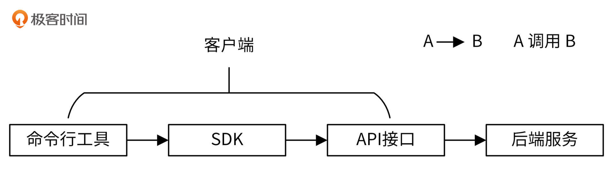
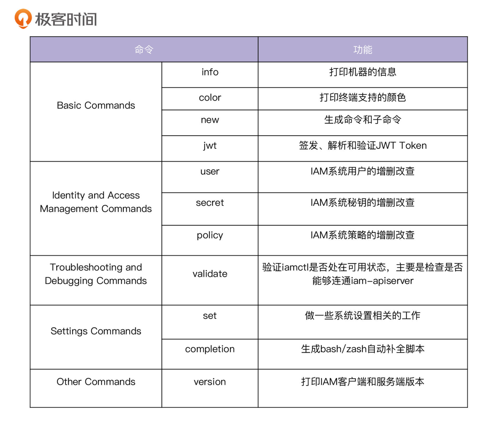
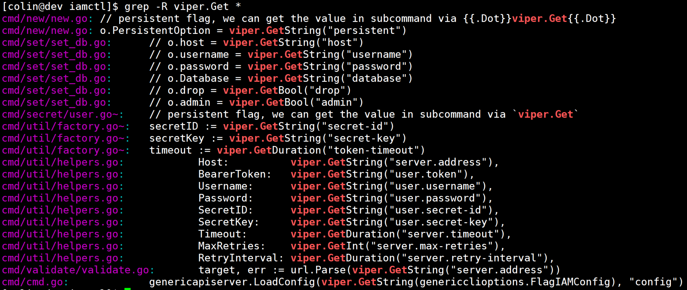
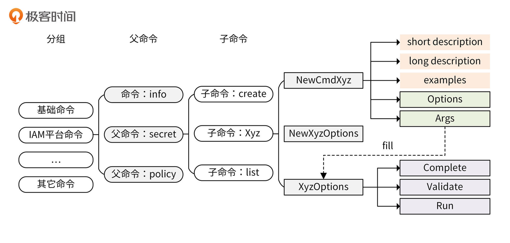
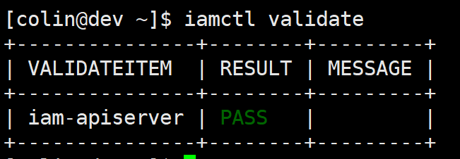
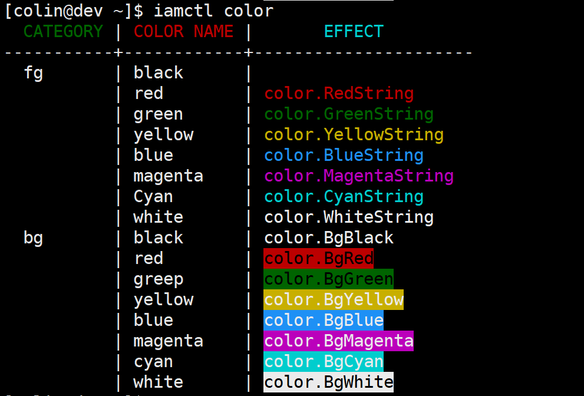
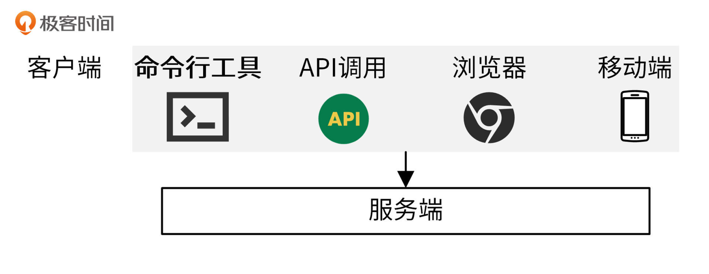

- 00 开篇词 从 0 开始搭建一个企业级 Go 应用.md.html
- 01 IAM系统概述：我们要实现什么样的 Go 项目？.md.html
- 02 环境准备：如何安装和配置一个基本的 Go 开发环境？.md.html
- 03 项目部署：如何快速部署 IAM 系统？.md.html
- 04 规范设计（上）：项目开发杂乱无章，如何规范？.md.html
- 05 规范设计（下）：commit 信息风格迥异、难以阅读，如何规范？.md.html
- 06 目录结构设计：如何组织一个可维护、可扩展的代码目录？.md.html
- 07 工作流设计：如何设计合理的多人开发模式？.md.html
- 08 研发流程设计（上）：如何设计 Go 项目的开发流程？.md.html
- 09 研发流程设计（下）：如何管理应用的生命周期？.md.html
- 10 设计方法：怎么写出优雅的 Go 项目？.md.html
- 11 设计模式：Go常用设计模式概述.md.html
- 12 API 风格（上）：如何设计RESTful API？.md.html
- 13 API 风格（下）：RPC API介绍.md.html
- 14 项目管理：如何编写高质量的Makefile？.md.html
- 15 研发流程实战：IAM项目是如何进行研发流程管理的？.md.html
- 16 代码检查：如何进行静态代码检查？.md.html
- 17 API 文档：如何生成 Swagger API 文档 ？.md.html
- 18 错误处理（上）：如何设计一套科学的错误码？.md.html
- 19 错误处理（下）：如何设计错误包？.md.html
- 20 日志处理（上）：如何设计日志包并记录日志？.md.html
- 21 日志处理（下）：手把手教你从 0 编写一个日志包.md.html
- 22 应用构建三剑客：Pflag、Viper、Cobra 核心功能介绍.md.html
- 23 应用构建实战：如何构建一个优秀的企业应用框架？.md.html
- 24 Web 服务：Web 服务核心功能有哪些，如何实现？.md.html
- 25 认证机制：应用程序如何进行访问认证？.md.html
- 26 IAM项目是如何设计和实现访问认证功能的？.md.html
- 27 权限模型：5大权限模型是如何进行资源授权的？.md.html
- 28 控制流（上）：通过iam-apiserver设计，看Web服务的构建.md.html
- 29 控制流（下）：iam-apiserver服务核心功能实现讲解.md.html
- 30 ORM：CURD 神器 GORM 包介绍及实战.md.html
- 31 数据流：通过iam-authz-server设计，看数据流服务的设计.md.html
- 32 数据处理：如何高效处理应用程序产生的数据？.md.html
- 33 SDK 设计（上）：如何设计出一个优秀的 Go SDK？.md.html
- 34 SDK 设计（下）：IAM项目Go SDK设计和实现.md.html
- 35 效率神器：如何设计和实现一个命令行客户端工具？.md.html
- 36 代码测试（上）：如何编写 Go 语言单元测试和性能测试用例？.md.html
- 37 代码测试（下）：Go 语言其他测试类型及 IAM 测试介绍.md.html
- 38 性能分析（上）：如何分析 Go 语言代码的性能？.md.html
- 39 性能分析（下）：API Server性能测试和调优实战.md.html
- 40 软件部署实战（上）：部署方案及负载均衡、高可用组件介绍.md.html
- 41 软件部署实战（中）：IAM 系统生产环境部署实战.md.html
- 42 软件部署实战（下）：IAM系统安全加固、水平扩缩容实战.md.html
- 43 技术演进（上）：虚拟化技术演进之路.md.html
- 44 技术演进（下）：软件架构和应用生命周期技术演进之路.md.html
- 45 基于Kubernetes的云原生架构设计.md.html
- 46 如何制作Docker镜像？.md.html
- 47 如何编写Kubernetes资源定义文件？.md.html
- 48 IAM 容器化部署实战.md.html
- 49 服务编排（上）：Helm服务编排基础知识.md.html
- 50 服务编排（下）：基于Helm的服务编排部署实战.md.html
- 51 基于 GitHub Actions 的 CI 实战.md.html
- 特别放送 Go Modules依赖包管理全讲.md.html
- 特别放送 Go Modules实战.md.html
- 特别放送 IAM排障指南.md.html
- 特别放送 分布式作业系统设计和实现.md.html
- 特别放送 给你一份Go项目中最常用的Makefile核心语法.md.html
- 特别放送 给你一份清晰、可直接套用的Go编码规范.md.html
- 直播加餐 如何从小白进阶成 Go 语言专家？.md.html
- 结束语 如何让自己的 Go 研发之路走得更远？.md.html
- 捐赠
35 效率神器：如何设计和实现一个命令行客户端工具？
你好，我是孔令飞。今天我们来聊聊，如何实现一个命令行客户端工具。
如果你用过Kubernetes、Istio、etcd，那你一定用过这些开源项目所提供的命令行工具：kubectl、istioctl、etcdctl。一个 xxx 项目，伴随着一个 xxxctl 命令行工具，这似乎已经成为一种趋势，在一些大型系统中更是常见。提供 xxxctl 命令行工具有这两个好处：
- 实现自动化：可以通过在脚本中调用
xxxctl工具，实现自动化。 - 提高效率：通过将应用的功能封装成命令和参数，方便运维、开发人员在Linux服务器上调用。
其中，kubectl命令设计的功能最为复杂，也是非常优秀的命令行工具，IAM项目的iamctl客户端工具就是仿照kubectl来实现的。这一讲，我就通过剖析iamctl命令行工具的实现，来介绍下如何实现一个优秀的客户端工具。
常见客户端介绍
在介绍iamctl命令行工具的实现之前，我们先来看下常见的客户端。
客户端又叫用户端，与后端服务相对应，安装在客户机上，用户可以使用这些客户端访问后端服务。不同的客户端面向的人群不同，所能提供的访问能力也有差异。常见的客户端有下面这几种：
- 前端，包括浏览器、手机应用；
- SDK；
- 命令行工具；
- 其他终端。
接下来，我就来分别介绍下。
浏览器和手机应用提供一个交互界面供用户访问后端服务，使用体验最好，面向的人群是最终的用户。这两类客户端也称为前端。前端由前端开发人员进行开发，并通过API接口，调用后端的服务。后端开发人员不需要关注这两类客户端，只需要关注如何提供API接口即可。
SDK（Software Development Kit）也是一个客户端，供开发者调用。开发者调用API时，如果是通过HTTP协议，需要编写HTTP的调用代码、HTTP请求包的封装和返回包的解封，还要处理HTTP的状态码，使用起来不是很方便。SDK其实是封装了API接口的一系列函数集合，开发者通过调用SDK中的函数调用API接口，提供SDK主要是方便开发者调用，减少工作量。
命令行工具是可以在操作系统上执行的一个二进制程序，提供了一种比SDK和API接口更方便快捷的访问后端服务的途径，供运维或者开发人员在服务器上直接执行使用，或者在自动化脚本中调用。
还有其他各类客户端，这里我列举一些常见的。
- 终端设备：POS机、学习机、智能音箱等。
- 第三方应用程序：通过调用API接口或者SDK，调用我们提供的后端服务，从而实现自身的功能。
- 脚本：脚本中通过API接口或者命令行工具，调用我们提供的后端服务，实现自动化。
这些其他的各类客户端，都是通过调用API接口使用后端服务的，它们跟前端一样，也不需要后台开发人员开发。
需要后台开发人员投入工作量进行研发的客户端是SDK和命令行工具。这两类客户端工具有个调用和被调用的顺序，如下图所示：

你可以看到，命令行工具和SDK最终都是通过API接口调用后端服务的，通过这种方式可以保证服务的一致性，并减少为适配多个客户端所带来的额外开发工作量。
大型系统客户端（xxxctl）的特点
通过学习kubectl、istioctl、etcdctl这些优秀的命令行工具，可以发现一个大型系统的命令行工具，通常具有下面这些特点：
- 支持命令和子命令，命令/子命名有自己独有的命令行参数。
- 支持一些特殊的命令。比如支持completion命令，completion命令可以输出bash/zsh自动补全脚本，实现命令行及参数的自动补全。还支持 version命令，version命令不仅可以输出客户端的版本，还可以输出服务端的版本（如果有需要）。
- 支持全局option，全局option可以作为所有命令及子命令的命令行参数。
- 支持-h/help，-h/help可以打印xxxctl的帮助信息，例如：
$ iamctl -h
iamctl controls the iam platform, is the client side tool for iam platform.
Find more information at:
https://github.com/marmotedu/iam/blob/master/docs/guide/en-US/cmd/iamctl/iamctl.md.html
Basic Commands:
info Print the host information
color Print colors supported by the current terminal
new Generate demo command code
jwt JWT command-line tool
Identity and Access Management Commands:
user Manage users on iam platform
secret Manage secrets on iam platform
policy Manage authorization policies on iam platform
Troubleshooting and Debugging Commands:
validate Validate the basic environment for iamctl to run
Settings Commands:
set Set specific features on objects
completion Output shell completion code for the specified shell (bash or zsh)
Other Commands:
version Print the client and server version information
Usage:
iamctl [flags] [options]
Use "iamctl <command> --help" for more information about a given command.
Use "iamctl options" for a list of global command-line options (applies to all commands).
- 支持
xxxctl help [command | command subcommand] [command | command subcommand] -h，打印命令/子命令的帮助信息，格式通常为命令描述 + 使用方法。例如：
$ istioctl help register
Registers a service instance (e.g. VM) joining the mesh
Usage:
istioctl register <svcname> <ip> [name1:]port1 [name2:]port2 ... [flags]
除此之外，一个大型系统的命令行工具还可以支持一些更高阶的功能，例如：支持命令分组，支持配置文件，支持命令的使用example，等等。
在Go生态中，如果我们要找一个符合上面所有特点的命令行工具，那非kubectl莫属。因为我今天要重点讲的iamctl客户端工具，就是仿照它来实现的，所以这里就不展开介绍kubectl了，不过还是建议你认真研究下kubectl的实现。
iamctl的核心实现
接下来，我就来介绍IAM系统自带的iamctl客户端工具，它是仿照kubectl来实现的，能够满足一个大型系统客户端工具的需求。我会从iamctl的功能、代码结构、命令行选项和配置文件解析4个方面来介绍。
iamctl的功能
iamctl将命令进行了分类。这里，我也建议你对命令进行分类，因为通过分类，不仅可以协助你理解命令的用途，还能帮你快速定位某类命令。另外，当命令很多时，分类也可以使命令看起来更规整。
iamctl实现的命令如下：

更详细的功能，你可以参考 iamctl -h 。我建议你在实现xxxctl工具时，考虑实现下面这几个功能。
- API功能：平台具有的API功能，都能通过xxxctl方便地进行调用。
- 工具：一些使用IAM系统时有用的功能，比如签发JWT Token。
- version、completion、validate命令。
代码结构
iamctl工具的main函数位于iamctl.go文件中。命令的实现存放在internal/iamctl/cmd/cmd.go文件中。iamctl的命令统一存放在internal/iamctl/cmd目录下，每个命令都是一个Go包，包名即为命令名，具体实现存放在 internal/iamctl/cmd/<命令>/<命令>.go 文件中。如果命令有子命令，则子命令的实现存放在 internal/iamctl/cmd/<命令>/<命令>_<子命令>.go 文件中。
使用这种代码组织方式，即使是在命令很多的情况下，也能让代码井然有序，方便定位和维护代码。
命令行选项
添加命令行选项的代码在NewIAMCtlCommand函数中，核心代码为：
flags := cmds.PersistentFlags()
...
iamConfigFlags := genericclioptions.NewConfigFlags(true).WithDeprecatedPasswordFlag().WithDeprecatedSecretFlag()
iamConfigFlags.AddFlags(flags)
matchVersionIAMConfigFlags := cmdutil.NewMatchVersionFlags(iamConfigFlags)
matchVersionIAMConfigFlags.AddFlags(cmds.PersistentFlags())
NewConfigFlags(true) 返回带有默认值的参数，并通过 iamConfigFlags.AddFlags(flags) 添加到cobra的命令行flag中。
NewConfigFlags(true) 返回结构体类型的值都是指针类型，这样做的好处是：程序可以判断出是否指定了某个参数，从而可以根据需要添加参数。例如：可以通过 WithDeprecatedPasswordFlag() 和 WithDeprecatedSecretFlag() 添加密码和密钥认证参数。
NewMatchVersionFlags 指定是否需要服务端版本和客户端版本一致。如果不一致，在调用服务接口时会报错。
配置文件解析
iamctl需要连接iam-apiserver，来完成用户、策略和密钥的增删改查，并且需要进行认证。要完成这些功能，需要有比较多的配置项。这些配置项如果每次都在命令行选项指定，会很麻烦，也容易出错。
最好的方式是保存到配置文件中，并加载配置文件。加载配置文件的代码位于NewIAMCtlCommand函数中，代码如下：
_ = viper.BindPFlags(cmds.PersistentFlags())
cobra.OnInitialize(func() {
genericapiserver.LoadConfig(viper.GetString(genericclioptions.FlagIAMConfig), "iamctl")
})
iamctl会按以下优先级加载配置文件：
- 命令行参
--iamconfig指定的配置文件。 - 当前目录下的iamctl.yaml文件。
$HOME/.iam/iamctl.yaml文件。
这种加载方式具有两个好处。首先是可以手动指定不同的配置文件，这在多环境、多配置下尤为重要。其次是方便使用，可以把配置存放在默认的加载路径中，在执行命令时，就不用再指定 --iamconfig 参数。
加载完配置文件之后，就可以通过 viper.Get<Type>() 函数来获取配置。例如，iamctl使用了以下 viper.Get<Type> 方法：

iamctl中子命令是如何构建的？
讲完了iamctl命令行工具的核心实现，我们再来看看iamctl命令行工具中，子命令是如何构建的。
命令行工具的核心是命令，有很多种方法可以构建一个命令，但还是有一些比较好的构建方法，值得我们去参考。接下来，我来介绍下如何用比较好的方式去构建命令。
命令构建
命令行工具的核心能力是提供各类命令，来完成不同功能，每个命令构建的方式可以完全不同，但最好能按相同的方式去构建，并抽象成一个模型。如下图所示：

你可以将一个命令行工具提供的命令进行分组。每个分组包含多个命令，每个命令又可以具有多个子命令，子命令和父命令在构建方式上完全一致。
每个命令可以按下面的四种方式构建。具体代码你可以参考internal/iamctl/cmd/user/user_update.go。
- 通过
NewCmdXyz函数创建命令框架。NewCmdXyz函数通过创建一个cobra.Command类型的变量来创建命令；通过指定cobra.Command结构体类型的Short、Long、Example字段，来指定该命令的使用文档iamctl -h、详细使用文档iamctl xyz -h和使用示例。 - 通过
cmd.Flags().XxxxVar来给该命令添加命令行选项。 - 为了在不指定命令行参数时，能够按照默认的方式执行命令，可以通过
NewXyzOptions函数返回一个设置了默认选项的XyzOptions类型的变量。 XyzOptions选项具有 Complete 、Validate 和 Run 三个方法，分别完成选项补全、选项验证和命令执行。命令的执行逻辑可以在func (o *XyzOptions) Run(args []string) error函数中编写。
按相同的方式去构建命令，抽象成一个通用模型，这种方式有下面四个好处。
- 减少理解成本：理解一个命令的构建方式，就可以理解其他命令的构建方式。
- 提高新命令的开发效率：可以复用其他命令的开发框架，新命令只需填写业务逻辑即可。
- 自动生成命令：可以按照规定的命令模型，自动生成新的命令。
- 易维护：因为所有的命令都来自于同一个命令模型，所以可以保持一致的代码风格，方便后期维护。
自动生成命令
上面讲到，自动生成命令模型的好处之一是可以自动生成命令，下面让我们来具体看下。
iamctl自带了命令生成工具，下面我们看看生成方法，一共可以分成5步。这里假设生成 xyz 命令。
第一步，新建一个 xyz 目录，用来存放 xyz 命令源码：
$ mkdir internal/iamctl/cmd/xyz
第二步，在xyz目录下，使用 iamctl new 命令生成 xyz 命令源码：
$ cd internal/iamctl/cmd/xyz/
$ iamctl new xyz
Command file generated: xyz.go
第三步，将 xyz 命令添加到root命令中，假设 xyz 属于 Settings Commands 命令分组。
在 NewIAMCtlCommand 函数中，找到 Settings Commands 分组，将 NewCmdXyz 追加到Commands数组后面：
{
Message: "Settings Commands:",
Commands: []*cobra.Command{
set.NewCmdSet(f, ioStreams),
completion.NewCmdCompletion(ioStreams.Out, ""),
xyz.NewCmdXyz(f, ioStreams),
},
},
第四步，编译iamctl：
$ make build BINS=iamctl
第五步，测试：
$ iamctl xyz -h
A longer description that spans multiple lines and likely contains examples and usage of using your command. For
example:
Cobra is a CLI library for Go that empowers applications. This application is a tool to generate the needed files to
quickly create a Cobra application.
Examples:
# Print all option values for xyz
iamctl xyz marmotedu marmotedupass
Options:
-b, --bool=false: Bool option.
-i, --int=0: Int option.
--slice=[]: String slice option.
--string='default': String option.
Usage:
iamctl xyz USERNAME PASSWORD [options]
Use "iamctl options" for a list of global command-line options (applies to all commands).
$ iamctl xyz marmotedu marmotedupass
The following is option values:
==> --string: default(complete)
==> --slice: []
==> --int: 0
==> --bool: false
The following is args values:
==> username: marmotedu
==> password: marmotedupass
你可以看到，经过短短的几步，就添加了一个新的命令 xyz 。 iamctl new 命令不仅可以生成不带子命令的命令，还可以生成带有子命令的命令，生成方式如下：
$ iamctl new -g xyz
Command file generated: xyz.go
Command file generated: xyz_subcmd1.go
Command file generated: xyz_subcmd2.go
命令自动补全
cobra会根据注册的命令自动生成补全脚本，可以补全父命令、子命令和选项参数。在bash下，可以按下面的方式配置自动补全功能。
第一步，生成自动补全脚本：
$ iamctl completion bash > ~/.iam/completion.bash.inc
第二步，登陆时加载bash，自动补全脚本：
$ echo "source '$HOME/.iam/completion.bash.inc'" >> $HOME/.bash_profile
$ source $HOME/.bash_profile
第三步，测试自动补全功能：
$ iamctl xy<TAB> # 按TAB键，自动补全为：iamctl xyz
$ iamctl xyz --b<TAB> # 按TAB键，自动补全为：iamctl xyz --bool
更友好的输出
在开发命令时，可以通过一些技巧来提高使用体验。我经常会在输出中打印一些彩色输出，或者将一些输出以表格的形式输出，如下图所示：

这里，使用 github.com/olekukonko/tablewriter 包来实现表格功能，使用 github.com/fatih/color 包来打印带色彩的字符串。具体使用方法，你可以参考internal/iamctl/cmd/validate/validate.go文件。
github.com/fatih/color 包可以给字符串标示颜色，字符串和颜色的对应关系可通过 iamctl color 来查看，如下图所示：

iamctl是如何进行API调用的？
上面我介绍了iamctl命令的构建方式，那么这里我们再来看下iamctl是如何请求服务端API接口的。
Go后端服务的功能通常通过API接口来对外暴露，一个后端服务可能供很多个终端使用，比如浏览器、命令行工具、手机等。为了保持功能的一致性，这些终端都会调用同一套API来完成相同的功能，如下图所示：

如果命令行工具需要用到后端服务的功能，也需要通过API调用的方式。理想情况下，Go后端服务对外暴露的所有API功能，都可以通过命令行工具来完成。一个API接口对应一个命令，API接口的参数映射到命令的参数。
要调用服务端的API接口，最便捷的方法是通过SDK来调用，对于一些没有实现SDK的接口，也可以直接调用。所以，在命令行工具中，需要支持以下两种调用方式：
- 通过SDK调用服务端 API 接口。
- 直接调用服务端的API接口（本专栏是REST API接口）。
iamctl通过cmdutil.NewFactory创建一个 Factory 类型的变量 f ， Factory 定义为：
type Factory interface {
genericclioptions.RESTClientGetter
IAMClientSet() (*marmotedu.Clientset, error)
RESTClient() (*restclient.RESTClient, error)
}
将变量 f 传入到命令中，在命令中使用Factory接口提供的 RESTClient() 和 IAMClientSet() 方法，分别返回RESTful API客户端和SDK客户端，从而使用客户端提供的接口函数。代码可参考internal/iamctl/cmd/version/version.go。
客户端配置文件
如果要创建RESTful API客户端和SDK的客户端，需要调用 f.ToRESTConfig() 函数返回 *github.com/marmotedu/marmotedu-sdk-go/rest.Config 类型的配置变量，然后再基于 rest.Config 类型的配置变量创建客户端。
f.ToRESTConfig 函数最终是调用toRawIAMConfigLoader函数来生成配置的，代码如下：
func (f *ConfigFlags) toRawIAMConfigLoader() clientcmd.ClientConfig {
config := clientcmd.NewConfig()
if err := viper.Unmarshal(&config); err != nil {
panic(err)
}
return clientcmd.NewClientConfigFromConfig(config)
}
toRawIAMConfigLoader 返回 clientcmd.ClientConfig 类型的变量， clientcmd.ClientConfig 类型提供了 ClientConfig 方法，用来返回*rest.Config类型的变量。
在 toRawIAMConfigLoader 函数内部，通过 viper.Unmarshal 将viper中存储的配置解析到 clientcmd.Config 类型的结构体变量中。viper中存储的配置，是在cobra命令启动时通过LoadConfig函数加载的，代码如下（位于 NewIAMCtlCommand 函数中）：
cobra.OnInitialize(func() {
genericapiserver.LoadConfig(viper.GetString(genericclioptions.FlagIAMConfig), "config")
})
你可以通过 --config 选项，指定配置文件的路径。
SDK调用
通过IAMClient返回SDK客户端，代码如下：
func (f *factoryImpl) IAMClient() (*iam.IamClient, error) {
clientConfig, err := f.ToRESTConfig()
if err != nil {
return nil, err
}
return iam.NewForConfig(clientConfig)
}
marmotedu.Clientset 提供了iam-apiserver的所有接口。
REST API调用
通过RESTClient()返回RESTful API客户端，代码如下：
func (f *factoryImpl) RESTClient() (*restclient.RESTClient, error) {
clientConfig, err := f.ToRESTConfig()
if err != nil {
return nil, err
}
setIAMDefaults(clientConfig)
return restclient.RESTClientFor(clientConfig)
}
可以通过下面的方式访问RESTful API接口：
serverVersion *version.Info
client, _ := f.RESTClient()
if err := client.Get().AbsPath("/version").Do(context.TODO()).Into(&serverVersion); err != nil {
return err
}
上面的代码请求了iam-apiserver的/version接口，并将返回结果保存在 serverVersion 变量中。
总结
这一讲，我主要剖析了iamctl命令行工具的实现，进而向你介绍了如何实现一个优秀的客户端工具。
对于一个大型系统 xxx 来说，通常需要有一个 xxxctl 命令行工具， xxxctl 命令行工具可以方便开发、运维使用系统功能，并能实现功能自动化。
IAM项目参考kubectl，实现了命令行工具 iamctl。iamctl集成了很多功能，我们可以通过iamctl子命令来使用这些功能。例如，我们可以通过iamctl对用户、密钥和策略进行CURD操作；可以设置iamctl自动补全脚本；可以查看IAM系统的版本信息。甚至，你还可以使用 iamctl new 命令，快速创建一个iamctl子命令模板。
iamctl使用了cobra、pflag、viper包来构建，每个子命令又包含了一些基本的功能，例如短描述、长描述、使用示例、命令行选项、选项校验等。iamctl命令可以加载不同的配置文件，来连接不同的客户端。iamctl通过SDK调用、REST API调用两种方式来调用服务端API接口。
课后练习
- 尝试在
iamctl中添加一个cliprint子命令，该子命令会读取并打印命令行选项。 - 思考下，还有哪些好的命令行工具构建方式，欢迎在留言区分享。
欢迎你在留言区与我交流讨论，我们下一讲见。
© 2019 - 2023 Liangliang Lee. Powered by gin and hexo-theme-book.